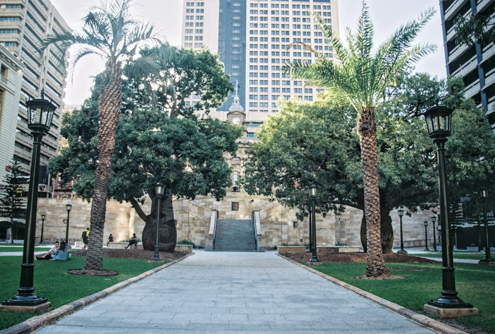

For Brisbane retaining walls, the decision usually turns on height, surcharge and drainage. The supplied source says building approval is avoided only when every listed condition is cleared, including not exceeding 1.0 metre, no surcharge, not being within 1.5 metres of a structure, not forming part of a pool barrier, and not reaching a 2.0 metre wall plus fence combination. Materials range from timber sleepers for low terraces to engineered block, concrete sleeper, rock, boulder and gabion walls.
For homeowners comparing retaining wall builders brisbane options, the practical question is whether the site needs a simple garden wall, an engineered wall, approval help, or full replacement.
Retaining Wall Builders Brisbane Explained
For the source guide, see Retaining Wall Brisbane.
Retaining Wall Brisbane frames the first decision around two site facts: how high the wall must be, and whether anything sits on the ground above it. That matters because the visible finish is only one part of the job. A low garden terrace, a boundary wall near a structure, and a taller wall carrying a driveway are different engineering and approval conversations.
The useful first brief is short and factual. Measure the height and length, describe what sits above the wall, note whether the existing wall is leaning, bulging, cracked or rotted, and describe access for excavation and earthworks. Those details help separate a cosmetic preference from a structural landscaping problem.
- Height: use the total retained height, not only the most visible face.
- Surcharge: identify driveways, buildings, pools or another wall behind the retained soil.
- Drainage: ask how agi drain, gravel, geofabric and stormwater connection will be handled.
- Condition: for replacement work, note movement, cracking, rot or bulging before asking for pricing.
Material Choices Follow Load, Access And Finish
Concrete sleeper walls are described in the source as steel-reinforced planks set between galvanised posts, and as the workhorse option for Brisbane cut-and-fill blocks. Timber sleepers still have a place for low garden terraces, low boundary retaining and stepped beds. Core-filled block suits taller engineered retaining, rendered finishes and walls carrying surcharge.
Stone, boulder and gabion choices fit a different brief. The source describes sandstone and boulder walls as battered back for a rugged, free-draining finish on larger sloping blocks and creek margins, while gabions use rock-filled wire baskets and are suited to steep and erosion-prone sites. If a reader wants another crawlable comparison of the same Brisbane wall topic, this Brisbane retaining wall builder guide sits alongside this one.
Approval Triggers To Check Before Quoting
The supplied guide says the familiar shortcut that walls over a metre need approval is only the first condition. A wall avoids building approval only if it clears every listed trigger. The key checks are total height over 1.0 metre, any surcharge load, being within 1.5 metres of a structure, forming part of a pool barrier, and a wall plus fence reaching 2.0 metres or more.
Approval and licensing are described as separate questions. Building approval turns on the physical triggers. QBCC licensing turns on the dollar value of the work. Where approval applies, the source says the wall is generally designed to AS 4678 by an RPEQ engineer and certified on a Form 15.
Who This Applies To
This guide is most useful for Brisbane owners dealing with sloped blocks, old timber walls, unusable yard levels, boundary retaining, creek-margin sites, low garden terraces, or a wall near another structure. It is also useful for owners comparing repair with full replacement when a wall is leaning, bulging, cracked or rotted.
It is less useful for readers looking for a decorative fence only, a flat-land landscaping refresh without retained soil, or a fixed price before the wall height, length, surcharge and drainage path are known. The supplied source says retaining walls are priced on face area, height times length, so a lineal-metre quote without height can hide the real scale of the job.
Questions That Improve A Written Quote
A strong quote request gives the builder enough information to identify the wall type, likely approval path and major cost drivers. The source page asks for height, length and what sits above the wall. Add photos, access notes, the existing material if there is one, and whether the wall needs drainage repair or a full rebuild.
- What retained height is being priced, including cut or fill above natural ground?
- Does anything behind the wall create surcharge?
- Will the design need engineering, building approval, AS 4678 design or Form 15 certification?
- What drainage system is included behind the wall, and where does it discharge?
- Is the quote based on face area rather than lineal metres?
- Measure the wall. Record the height and length, then note whether the retained level varies along the run.
- Identify loads above. List any driveway, building, pool, fence or second wall near the retained soil.
- Check approval triggers. Compare the site against the height, surcharge, structure, pool barrier and wall plus fence triggers in the source guide.
- Ask for drainage detail. Request the proposed agi drain, gravel, geofabric and stormwater connection in writing.
- Compare like with like. Use face area, material, approval scope and drainage inclusions when comparing quotes.
| Situation | Likely direction | Question to ask |
|---|---|---|
| Low garden terrace | Timber sleeper may suit low landscaping work | Is the wall purely garden retaining, or does it carry extra load? |
| Cut-and-fill block | Concrete sleeper is described as a common replacement option | What post, sleeper and drainage details are included? |
| Taller or loaded wall | Core-filled block or engineered design may be needed | Does the wall require AS 4678 design and Form 15 certification? |
| Steep or creek-margin site | Rock, boulder or gabion may suit the site character | How will drainage and erosion-prone ground be managed? |
Common questions
Does every Brisbane retaining wall need approval? No. The supplied guide says a wall avoids building approval only if it clears all listed triggers, including height, surcharge, proximity to structures, pool barrier use, and combined wall plus fence height.
Is concrete sleeper always the best option? No. The source describes concrete sleeper as a common workhorse for cut-and-fill blocks, but timber, core-filled block, sandstone, boulder and gabion walls each suit different site conditions.
Why can two retaining wall quotes differ so much? The source says walls are priced on face area, height times length, not lineal metres. Approval, surcharge, access, material and drainage inclusions can also change the job.
What should I send before asking for a quote? Send the wall height, wall length, suburb or postcode, photos, what sits above the wall, and whether the existing wall is leaning, bulging, cracked or rotted.
This guide covers Brisbane retaining wall material choices, approval triggers, drainage questions and quote preparation for sloping block owners.